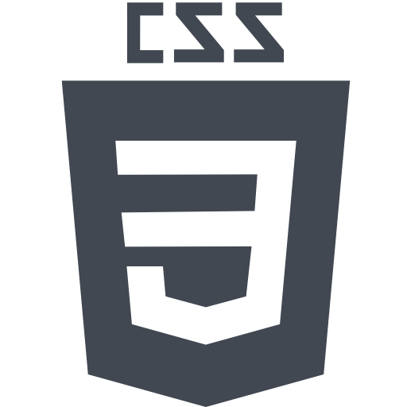
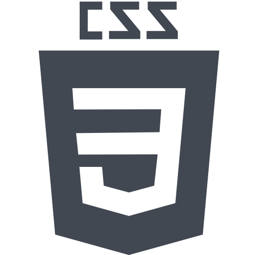

Mes langages
 



Études

IUT de Lannion
2021-Aujourd'hui
Etudiant en deuxième année de B.U.T Informatique.
Apprentissage de langage de programmation front-end et back-end.
Réalisation de plusieurs projets informatique comme le développement de site internet afin d'appliquer les connaissances et d'améliorer le travail d'équipe.

Lycée Jean-Moulin
2018-2021
Titulaire du baccalauréat général spécialité Géopolitique et SVT obtenu au lycée Jean-Moulin à Chateaulin (Finistère), j'ai pu développer des qualités comme la rigueur, la curiosité, la réflexion et la qualité d'expression qui étaient essentielles dans mes spécialités. Je dispose également d'un bon niveau en anglais et en allemand.
Experiences professionnelles
Employé de collectivité
Juillet-Août 2022
Réalisations de différentes tâches comme le service, la plonge et le ménage.
Capacité à respecter les règles d'hygiène et de sécurité.
Obligation d'un travail efficace et complet.

Stage d'archéologie
10-15 Juin 2019
Stage de découverte de classe de seconde. (1 semaine)
• Mise en place d'une exposition au Château de Kerjean.
• Fouilles archéologiques de la villa Gallo-romaine de Pérennou à Plomelin.